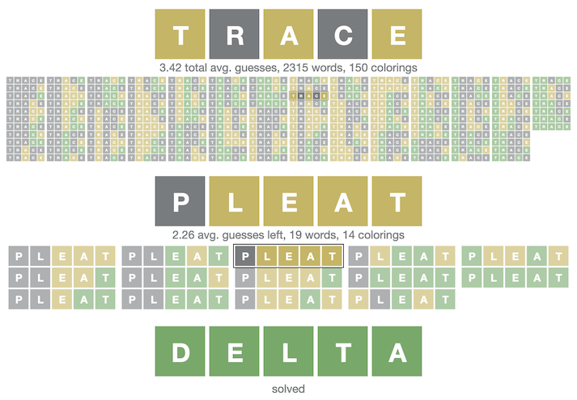

<link href="/css/wordle-solver.css" rel="stylesheet">
<aside class="sidebar sidebar-left">
  <nav class="sticky-content">
    <div>Contents</div>
    <ul>
      <li><a href="#decision-trees-and-metrics">Decision Trees and Metrics</a></li>
      <li><a href="#deep-vs-shallow-solutions">Deep vs. Shallow Solutions</a></li>
      <li><a href="#results">Results</a></li>
      <li><a href="#code-and-computations">Code and Computations</a></li>
    </ul>
  </nav>
</aside>
<main>
  <p>
    The game <a href="https://www.powerlanguage.co.uk/wordle/">Wordle</a> has a lot of speculation online about what is
    the "best" first word.

    If we are exploring <strong>optimal</strong> strategies to solve the original game in the least number of guesses, <strong>most of it is wrong</strong>.
  </p>
  <p>
    For humans, almost all of these words are great! However for optimal strategies, we need to examine all of the guesses,
    not just the first word. It turns out, it's possible to <strong>solve 99% of all puzzles in only 4 guesses</strong> or
    <strong>with an average of ~3.42 guesses per win</strong>,
    but not with most of the "best" words found online.
  </p>
  <p style="text-align: center; font-weight: bold;">
    Try out my <a href="https://jonathanolson.net/wordle-solver/">solver with the best strategies</a> that have been found so far.
  </p>
  <p style="text-align: center;">
    <a href="https://jonathanolson.net/wordle-solver/"></a>
  </p>
  <p>
    It's important to note that Wordle has a specific set of "target" words (that could be the daily word in a puzzle),
    and a much larger set of "guessable" words (that you can use to guess, but will never be the daily word). All of this
    is specific to the exact word lists that Wordle currently uses.
  </p>
  <h2 id="decision-trees-and-metrics">Decision Trees and Metrics</h2>
  <p>
    Each (non-stochastic) strategy can be represented by a
    <a href="https://en.wikipedia.org/wiki/Decision_tree">decision tree</a>, where there is a single initial guess, and
    each possible resulting coloring (grey/yellow/green) in the game will also be paired with a second guess, and so on.
    The entire game is mapped out. <a href="https://jonathanolson.net/wordle-solver/">My best "strategies" so far</a> are
    hopefully a good example.
  </p>
  <p>
    For whatever metric we are judging strategies by, there will be one or more "best" strategies. There are a few metrics
    that I've used. After seeing most words solvable in less than 5 guesses, my initial metric was "words that can be
    solved in 4 or fewer guesses", with a goal of all words being solvable that way. I have not run into this case
    (18 words short!!), and I'm in progress
    <a href="https://github.com/jonathanolson/wordle-solver/blob/master/server/scanGuess.js">computationally verifying</a>
    that this is not possible (the heuristically best third of all words have been exhaustively checked).
    I've switched to minimizing the metric "average guesses per win".
  </p>
  <h2 id="deep-vs-shallow-solutions">Deep vs. Shallow Solutions</h2>
  <p>
    Most of the "best" words discussed online have been computed by examining the effects/eliminations/entropy of just the
    first guess, however this can actually result in non-optimal strategies!
  </p>
  <p>
    For any list of target and a guessable word, we can partition the target words into distinct sets by
    determining what colors they would get for a given guess. For example, if our guess is TRACE, we will have one set
    of words where the first letter is gray and the rest are green (BRACE, GRACE). We tend to gain a lot of information
    when most of these sets are small, and I've based search heuristics off of a combination of the size of the largest
    set and the average size of sets.
  </p>
  <p>
    This lets us see what guesses give us the most information at that stage, <strong>however, the best guess at this
    stage may result in some sets that are more difficult to solve</strong>.
  </p>
  <p>
    This is solvable by recursively exploring the space of all possible strategies, to see which ones have the highest
    values for a given metric. Using the heuristics above (based on how the partitioned sets are sized), tree searches
    have found <a href="https://jonathanolson.net/wordle-solver/">more optimized strategies with different starting words</a>.
  </p>
  <h2 id="results">Results</h2>
  <p>
    The best strategy I've found for the metric of "most 4-guess words" starts with RANCE (99.22%, missing just 18 words),
    with RANTS/RATED/RONTE/ALTER close by.
    The best for "fewest average guesses" is currently SALET (3.42117), with REAST/CRATE/TRACE/SLATE close by.
  </p>
  <p>
    All of these examples are available at <a href="https://jonathanolson.net/wordle-solver/">https://jonathanolson.net/wordle-solver/</a>.
  </p>
  <h2 id="code-and-computations">Code and Computations</h2>
  <p>
    The <a href="https://github.com/jonathanolson/wordle-solver">code I've used to run these searches</a> is available.
    It's in a rough state right now, however I'll likely refine it in the upcoming weeks.
    The <a href="https://github.com/jonathanolson/wordle-solver/blob/master/server/wordleCompute.js">tree search logic</a>
    has two types of nodes, since we need one to store different guesses for the same set of words (ComputationNode), and
    one that has a map of all possible scores given a guess (GuessNode). I'm able to compute and serialize these trees
    (currently at 6GB of data on disk), and then efficiently compute optimized strategies given different metrics
    (createTree).
  </p>
  <p>
    I've used <a href="https://github.com/jonathanolson/wordle-solver/blob/master/server/scanGuess.js">scanning for 4-guess strategies</a>,
    using a separate optimized section of code that isn't constructing a persistent tree. It doesn't look possible to have
    a strategy that can always solve Wordle puzzles in only 4 guesses every time.
  </p>
</main>